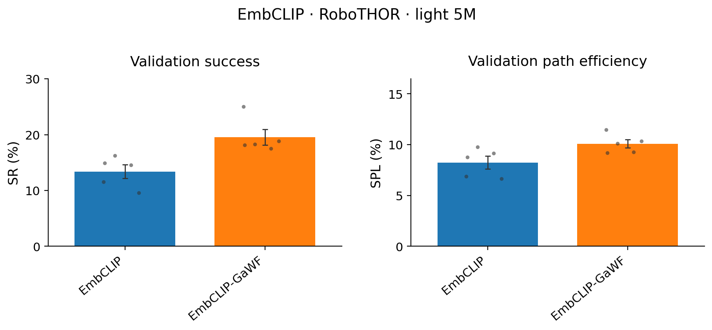
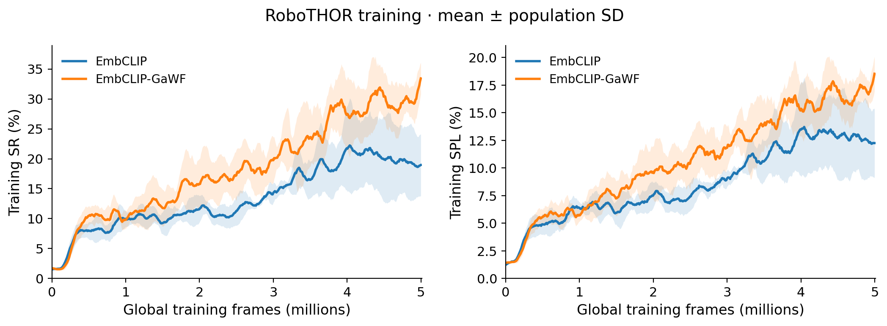

FEEDBACK-GATED MEMORY SUPPORTS VISUAL NAVIGATION
GitHubWe compare EmbCLIP with EmbCLIP-GaWF on unseen RoboTHOR environments. Both agents receive RGB images and a target object category.
Feedback-gated memory improves validation performance in RoboTHOR.

The previous decision gates the next memory update.
GaWF uses the previous policy output to modulate input and recurrent weights. We compare parameter-matched recurrent models with the same frozen CLIP visual encoder, target-category encoding and lightweight training procedure.
The models learn to navigate from RGB observations.
The lightweight RoboTHOR experiment uses a 5M-frame training budget and the standard train and validation scene split.
